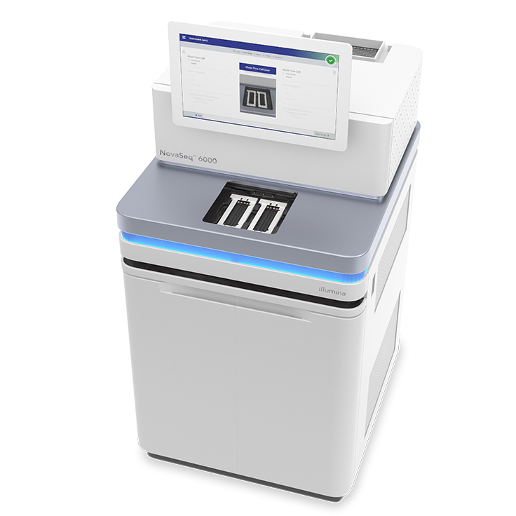
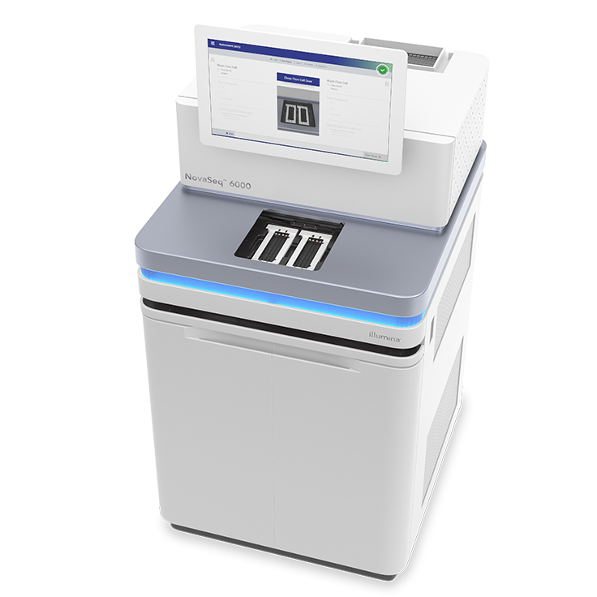

This is an introduction of the background of my final project
 

Extracellular Vesicles (EV) is a nano-sized heterogeneous group of bi-lipid membrane vesicles that can be secreted by mesenchymal stem cells (MSC). EVs exerts similar funtion as MSC in tissue repair and tissue regeneration without those disadvantages in MSC transplatation. EV encapsulates a wide range of proteins, lipids, and nucleic acids while their bi-lipid layers facilitating cell-cell communication. MiRNA is an important group of nucleic acids due to their extensive regulation of genes expression. Thus, miRNA profiling in EV is thought to be critical in tissue engineering. Here are an EV sketch and the machine for miRNA sequencing. The samples for sequencing are collected from EV isolated from MSC cultured under 2D or 3D environment.